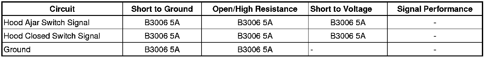

B3006
DTC B3006
Diagnostic Instructions
* Perform the Diagnostic System Check - Vehicle (Initial Inspection and Diagnostic Overview) prior to using this diagnostic procedure.
* Review Strategy Based Diagnosis (Initial Inspection and Diagnostic Overview) for an overview of the diagnostic approach.
* Diagnostic Procedure Instructions (Initial Inspection and Diagnostic Overview) provides an overview of each diagnostic category.
DTC Descriptor
DTC B3006 5A
- Hood Ajar Circuit Plausibility Failure
Diagnostic Fault Information

Circuit/System Description
The body control module (BCM) monitors the voltage input of the hood open switch signal circuit and the hood open closed switch signal circuit. With the hood open, the hood ajar portion of the switch is closed, grounding the hood ajar switch signal circuit from the BCM, and the hood closed portion of the switch is open. With the hood closed, the hood closed portion of the switch is closed, grounding the hood closed switch signal circuit from the BCM, and the hood ajar portion of the switch is open. During proper operation, the two separate voltage signals at the BCM should never be at the same voltage.
Conditions for Running the DTC
The BCM continuously monitors for this DTC
Conditions for Setting the DTC
Both the hood open switch signal circuit and the hood closed switch signal circuit are simultaneously in an active or inactive state.
Action Taken When the DTC Sets
* Remote start functions will be disabled.
* The hood ajar switch inputs will be ignored by content theft deterrent (CTD).
Conditions for Clearing the DTC
* A current DTC will clear when the conditions for setting are no longer present.
* A history DTC will clear after 40 malfunction free ignition cycles.
Reference Information
Schematic Reference
Remote Function Schematics (Remote Function Schematics)
Connector End View Reference
Component Connector End Views (Connector Views)
Description and Operation
Keyless Entry System Description and Operation (Description and Operation)
Electrical Information Reference
* Circuit Testing (Component Tests and General Diagnostics)
* Connector Repairs (Component Tests and General Diagnostics)
* Testing for Intermittent Conditions and Poor Connections (Component Tests and General Diagnostics)
* Wiring Repairs (Component Tests and General Diagnostics)
Scan Tool Reference
Control Module References (Programming and Relearning) for scan tool information
Circuit/System Verification
Ignition ON, observe the scan tool BCM Hood Open Switch and Hood Closed Switch parameters. With the hood open, the Hood Open Switch parameter should read Active and the Hood Closed Switch parameter should read Inactive. With the hood closed, the Hood Open Switch parameter should read Inactive and the Hood Closed Switch parameter should read Active.
Circuit/System Testing
1. Ignition OFF, disconnect the harness connector at the hood ajar switch.
2. Ignition OFF, test for less than 5 ohms of resistance between the ground circuit terminal C and ground.
• If greater than the specified range, test the ground circuit for an open/high resistance.
3. Ignition ON, test for 11.5-12.0 volts between the signal circuit terminal A and ground.
• If greater than the spcified range, test the signal circuit for a short to voltage. If the circuit tests normal, replace the BCM.
• If less than the spcified range, test the signal circuit for a short to ground or an open/high resistance. If the circuit tests normal, replace the BCM.
4. Ignition ON, test for 11.5-12.0 volts between the signal circuit terminal B and ground.
• If greater than the spcified range, test the signal circuit for a short to voltage. If the circuit tests normal, replace the BCM.
• If less than the spcified range, test the signal circuit for a short to ground or an open/high resistance. If the circuit tests normal, replace the BCM.
5. If all circuits test normal, test or replace the hood ajar switch.
Component Testing
Hood Ajar Switch
1. Ignition OFF, disconnect the harness connector at the hood ajar switch.
2. With the switch in the hood closed position, test for infinite resistance between the ground terminal C and the signal terminal A.
• If not infinite, replace the hood ajar switch.
3. Test for less than 2.0 ohms of resistance between the ground terminal C and the signal terminal B.
• If greater than the specified range, replace the hood ajar switch.
4. With the switch in the hood open position, test for infinite resistance between the ground terminal C and the signal terminal B.
• If not infinite, replace the hood ajar switch.
5. Test for less than 2.0 ohms of resistance between the ground terminal C and the signal terminal A.
• If greater than the specified range, replace the hood ajar switch.
Repair Instructions
Perform the Diagnostic Repair Verification (Verification Tests) after completing the diagnostic procedure.
* Hood Primary and Secondary Latch Replacement (Service and Repair)
* Control Module References (Programming and Relearning) for BCM replacement, programming and setup